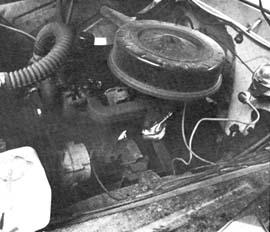
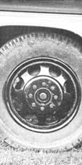
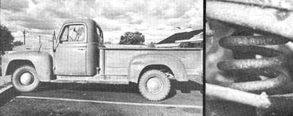
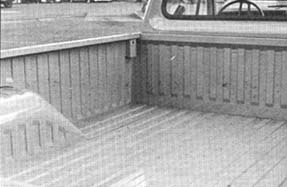
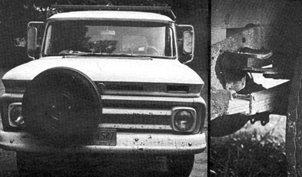
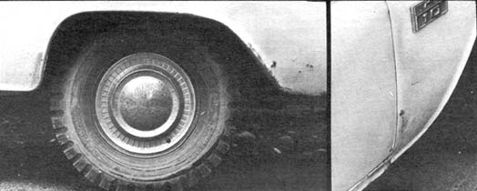
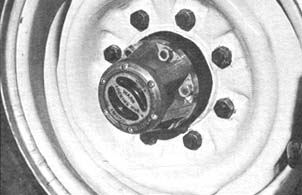
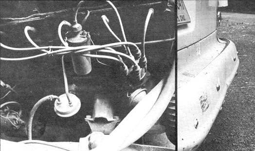

Not long ago the ruggedest, most versatile farm utility vehicle made anywhere was the pickup truck manufactured by the American automotive industry. Like most Detroit brain children, it was a mother-bear to work on . . . but the body was solid enough to withstand the most abusive treatment and the springs-designed for shouldering brawny loads down back roads-could put kinks in your backbone.
Recently, though, the American pickup truck has been transformed into a glorified town car. Its body is now tinnier, chromier, more sculptured . . . and the springs have been softened so much in an effort to make the vehicle suitable for Miss America to drive to the boat dock that, today, a new "stock" pickup is hardly qualified to haul a load of feathers to a comfort factory. But, to be fair, the machine's engine has been improved and somebody up there has actually begun to think about us poor devils who have to work on the monster.
Now, if you've never owned a real working vehicle of any kind, you might not realize just how important that last point-which I call "maintenance potential"-can be. In truth, though, the maintenance potential (how easily and economically a machine can be repaired by its owner) is of supreme importance to anyone buying a new or used pickup . . . especially if the buyer will be operating the vehicle in a remote area and/ or on a limited budget.
To determine the MP of a pickup, first compare the size of the truck's engine with the size of the vehicle's engine compartment. Look at the clearance between the firewalls and the engine (bearing in mind that clear space equals easier working conditions every time you're forced to make an adjustment or replace something).
Next, concentrate on the manner in which the engine and its accessories are arranged within that space. Is everything packed tightly into a confusing maze? That sort of efficiency can cause you to move half the engine to get at the generator or adjust the carb . . . and will cost you time and barked knuckles (if you do your own repairs) or money (if you hire it done). Either way, it certainly takes the joy out of even minor maintenance.
Is the engine a six cylinder or a V-8? An eight has its uses on a drag strip but there are several arguments against it in a utility vehicle. For one, it's a hard dude to work on. An eight also has more moving parts to replace than a six and the arrangement of those parts generally makes for a lot more grunting and straining when repair time rolls around. And then there's the eight's greater appetite for fuel.
On the other hand, the six has its problems also, the greatest of which is lack of power when it comes to muscling into the tougher jobs.
The best compromise is often what is known as the "truck-six". This is the engine designed especially for 3/4-ton and larger trucks. As built by most major companies, the powerplant ranges in the neighborhood of 300-cubic inches, has enough guts to walk right through the toughest jobs and is built to last. These durable mills almost always have five main bearings instead of the three considered sufficient on most automobile engines . . . which reduces wear on the crankshaft, rod bearings and main bearings themselves.
Obviously, a truck-six engine will probably be your first choice but-V-8, six or truck-six-every powerplant must be judged on its own merits. No need to jump in any direction yet. Might as well check out a few of the finer points while you have your head under that hood.
Look at the position of the distributor and the nut underneath which must be loosened to adjust the engine's timing. Is the nut easily accessible or will it take an extension elbow to reach it? Is the distributor itself in such a position that you can time the ignition alone . . . or will you need another person to move the blamed thing while you operate a timing light?
If you can see the fuel pump, can you get a wrench on it? Open, box-end or socket? Using an open or box on a long bolt can be a royal pain, especially when you're running short of daylight or a storm is approaching.
What about the water pump? Will you have to remove the radiator to change it? And the bolts that hold it in place . . . ask yourself the same questions about them that you asked about the bolts on the fuel pump.
By now you're getting the general idea. If you buy this truck, you're the one who's going to have to work on it, love it and take care of it. That knowledge kind of gives you a more critical eye as you look the vehicle over, doesn't it?
OK. Now check the maintenance potential of the seldom-considered bottom side of the truck. Crawl underneath and take a look at the bolts which hold the crankcase on. Can you get to all of them with a tool of some kind? A careful look will tell you a lot about whether or not you want to own this pickup. The crucial question is: can you drop the oil pan without pulling the engine? On a number of models you can't and, in that case, you probably won't want the truck.
In the same manner, if the drive shaft from the engine to the real wheels is enclosed above the frame, you'll have trouble dropping it to pull the transmission or to replace the universal joints. The situation is roughly equivalent to that of a dentist telling you that your teeth are all right . . . but your gums have got to come out.
So much for a quick check of the maintenance potential of the vehicle you're considering. Another area that's extremely important in a farm pickup is is hauling capacity . . . a subject which covers a very wide range of non-standard characteristics. If you're buying your first utility vehicle, chances are you're not familiar with these characteristics and you'll only notice them when you don't want to. That is, when they get in the way or when you need them and they're not there.
First off, pickups come under two tonnage designations: 1/2-ton and 3/4-ton. These quick-and-easy tag names used by Detroit tell you only that the second is larger than the smaller. That's all the names mean. Trucks in both categories-properly outfitted-are capable of hauling immeasurably more than three-quarters of a ton. Other pickups-again, in both categories-are often unsafe carrying a load half that size. The difference depends, in large part, on the tires and springs with which the truck is equipped.
But tires are tires, right? Wrong! In fact, there is such an incredibly diffuse selection of tires-made from different materials, in different sizes, different plys and different ply "equivalents"-now on the market that this piece could easily turn into a book about tires. Let me over-simplify, then, and say only that you'll be wise to make certain your pickup is mounted on truck-not automobile-tires that are rated for the largest total gross weight at which you ever expect your vehicle to tip the scales . . . plus a generous margin for error, wear, etc. In general, too, the bigger in diameter the wheels and tires are, the better they'll be for lugging around heavy loads . . . assuming, of course, the truck's springs will take those loads.
I favor 16" wheels because they offer more ground clearance than fifteen inchers. And, since the 16" tires range from six to sixteen ply, the body of one of the heavier tires will have a longer life than the tread and can be safely recapped almost forever. As a second choice, there are some very good trucktype fifteen inch wheels and tires. They don't come as standard equipment on 1/2-ton trucks but they are available and they're worth every extra penny you pay for them. You might also consider buying only mud-grip or snow tires for the back country. They don't hold up as well at highway speeds but they can't be beat for getting away from it all.
Today's "standard" half-ton pickup is a second cousin to the family car but a 3/4-ton is half-brother to real, no-nonsense, hauling trucks. From the outside, it's hard for some first-timebuyers to tell one from the other. The difference, however, is worthy of note . . . even if-as is generally the case-that difference happens to lie in out-of-sight places.
Not so out-of-sight are the noticeably larger and heavier-duty engine, transmission and rear end on the 3/4-ton machine. Also obvious are the standard 16" truck tires (the half-ton comes equipped with automobile-type fifteen inchers). The springs are hardier and heavier on the 3/4-ton, too. Miss America wouldn't like the rougher ride that results but you'll appreciate the greater hauling capability those springs give you.
Spring capacity is one of those not-so-obvious things that represents an important consideration no matter what size pickup you buy. Much of a truck's utility depends on this capacity, so always try to get the heaviest springs available (without necessarily going to "overloads" unless you know you'll be doing a lot of extremely heavy hauling). The bigger and heavier the springs, the longer it'll be before they sag . . . and, in the meantime, they'll give you a great deal of protection on heavy jobs.
By the way, coil springs are another one of Detroit's inventions that are better left off a truck. They sure enough give you a soft automobile-like ride . . . but they aren't as strong or as durable as good leaf springs.
Another point to consider when you're figuring the hauling capacity of a truck is the machine's wheel base: the distance between the front and rear wheels. There are strong arguments in favor of both the long and short wheel base. Forget those arguments and let the specific use you have in mind for your truck make the decision for you.
Trucks with a long wheel base generally ride more smoothly on the road and-having a longer bed-have a larger load capacity than those trucks with a short wheel base. The long-legged vehicles are less maneuverable, however . . . the longer distance between the sets of wheels gives the machine a larger turning radius and tends to make it more susceptible to "high centering", or dragging its belly, in rough country.
Short wheel base trucks are easy to park and generally get around better in both traffic and the boondocks than do their spaced-out counterparts. The shorties are also better for jobs like pulling stumps because they generally have more weight over the rear wheels. But the bed on these sawed-off pickups is-understandably-a couple of feet shorter too and, if you put a tool box behind the cab, you'll find the space left over hardly bigger than a car trunk.
A small bed on a pickup can be the largest single factor in determining the truck's hauling capacity since a well-sprung and wellmounted vehicle can haul a lot more of most things than anyone could ever cram into even a long bed.
Pickup beds come in two basic sizes: wide and narrow. Each has a specific purpose and each is available in 1/2 or 3/4-ton, short or long wheel base.
The walls of a narrow bed go inside the truck's wheelwells, making the bed a straight-sided, rectangular box. Grain, sand, feed and other scoop-it-out-with-a-shovel materials are much easier to unload from one of these beds since there's no wheelwells sticking into the box to work around.
For hauling anything other than loose loads, though, you'll usually come out ahead with the wide bed. It has considerably more room and is almost wide enough to let you lie down in it crosswise. The wide bed also offers a lot more storage space "back in" if you ever mount a camper on such a pickup.
Another seemingly unimportant (at least at first glance) element of truck design is the position of the spare tire. If the tire is mounted on the inside of your pickup's box it can take up a lot of valuable hauling space. If located on the outside of a narrow bed, the tire may encourage a ripoff artist to lean against the vehicle's side, work off the lugs and steal the wheel in broad daylight.
Many of the newer trucks mount the spare under the bed. This is a good place for it . . . unless you'll be working your pickup in really rough country. Many times I've had to use my spare tire as a base for the jack in order to get the truck out of mud. If the extra wheel had been up under the bed, I'd have been in a bad fix.
The ideal place for the spare, if you have a choice, is over the front bumper. There, it will offer some protection in case of collision and it'll be completely out of the way when you aren't using it, completely accessible when you are. One caution, however: on some trucks it's necessary to mount the extra wheel off center so it won't cause the vehicle to overheat by unnecessarily blocking air flow to the machine's radiator.
A very important factor that buyers often overlook while shopping for a truck is fuel capacity. This can be of prime importance in the back country. Fuel tanks capable of holding upward of 60 gallons are available as options on many newer trucks and they're a good buy. They'll get you into town in an emergency and-in the city-they can carry you from gas war to gas war.
Matter of fact, the whole subject of fuel itself cannot be overlooked by anyone shopping for a pickup. In some back areas of this country (and certainly in rural Mexico) the best petroleum available is little more than high-grade kerosene. Needless to say, high compression engines don't function well on such a brew so steer clear of high compression equipment on your homestead vehicle. Even with severely retarded timing, many of today's Detroit mills will ping and perform poorly on less than the highest-octane gasoline.
If you'll be operating your truck in a milder climate, you might even consider converting it to butane. I've heard that, this fuel doesn't perform well in colder regions but it's a beautiful way to power all your machinery in more temperate areas. . . clean, safe, economical, efficient and easy to store.
And how about the transmission for that pickup? Automa or standard? Four-speed or three? Which is best? Most durable? Well, I don't know exactly . . . but here are some of the pros and cons.
Three-speed, standard shift transmissions are tough, simple, and easy to work on . . . but they don't have that compound bottom gear which gives SO much torque and which is so handy out back of beyond. Then again, there's no synchramesh on the four-speed's bottom gear, which means that yon have to be standing still to shift into compound low . . . and frequently you aren't when you want to shift the most. T` four-speed is more complicated to work on, too. Still, that bottom gear is nice to have.
Folks who like them, consider modern automatic transmissions to be probably the most misunderstood pieces of machinery in history. Contrary to popular belief, they say. today's automatic transmission-although probably not quite a rugged as a standard-is certainly rugged. Furthermore, an automatic delivers power to the rear wheels more smoothly thaws standard, giving an automatic-equipped truck better traction in mud and snow. Most of today's drivers find an automatic transmission easier to handle, too, and-given reasonable care-it should last at least 100,000 miles.
Unfortunately, there's just one catch: you're never going to be able to fix an automatic transmission yourself unless you know exactly what you're doing and you have the special tools necessary for the job. Chances are, you don't . . . and hiring the work done is expensive. If you're lucky, you'll never face the problem. Then again . . .
Happily, selecting a rear end for your truck is easier . . . partly because you have fewer choices. If you buy a 3/4-ton, you'll automatically get a significantly larger and heavier-duty rear end than is available for 1/2-ton pickups. A two-speed rear end is offered on both sizes by some manufacturers and-if you find one-consider yourself fortunate. They're usually pretty good. I consider posi-traction (limited slip) rear ends almost a must in rugged terrain.
If you get a chance to pick up a four-wheel drive vehicle and it's in good condition, I'd say do it! It'll have almost unlimited use on your farm, especially if you make sure the machine has quickdisengage hubs (such as Warn) up front which will allow those wheels to roll freely when you want. Driving on the road with all four wheels powered can give you a superior form of headache and additional mechanical problems later.
Most truck manufacturers offer a power take-off option front, rear and sometimes even amidship on at least their 3/4-ton pickups. PTO is not at all necessary when you're using a pickup only for hauling but it's a handy thing to have for running winches, loaders, snow blowers and other accessories that folks sometimes put on personal trucks.
Now that we have an idea of what to look for and avoid on pickup trucks in general, let's give a little more thought to buying a used vehicle.
First off, it's good to remember that the fellow selling a particular second or third-hand machine probably used the vehicle for the same purpose you have in mind: hard work. Even if the truck has really been put through its paces, however, that doesn't mean it's worthless. A severely used pickup can be a good buy if it's been well taken care of. If you're interested in a used pickup, it's up to you to check it out carefully and try to second guess the man who owns the vehicle. He has a reason for selling . . . if you can find out what it is, you may have some idea of the worth of the truck.
When trying to determine the condition of a particular pickup, you should-again-look at the engine. Pay attention to the finer details. Is everything clean? Do you see oil splattered or dripping anywhere? Is there oil splashed up on the underside of the hood?
If the pickup isn't clean, drive it to a 25 cents car wash and get as much of the grease and oil off the vehicle as you can. Then run it for a while, inspect at the engine and engine compartment again . . . and you should be able to tell whether the powerplant has any serious oil or water leaks. Look at the oil while the engine is hot. It's probably new (changed just for the occasion by the man trying to sell the truck) but you're not going to be fooled that easily.
Pull the dipstick and inspect the oil very carefully. Are there spots of sludge in it? If there are, it suggests that the previous owner didn't change the oil often enough and that there are probably sludge deposits in both the lubrication lines and the crankcase. When you find evidence like this, it's a good idea to pull the rocker arm cover-if you can-and have a look underneath. I've seen engines with sludge buildups so bad that the rocker arms and lifters weren't getting any oil at all. (Excessive tappet noise is also sometimes an indication of this problem).
If there are any strange noises coming from the engine compartment while the truck is running, try to find out exactly what those noises are. Rev the engine, lug it . . . and listen carefully. If you have a vacuum gauge, use it. It can tell you a lot.
Now shut the engine off and look at the oil again. Do you see evidence of water bubbles? If you do, it could mean several things . . . probably a cracked block.
Never buy a truck until you've run a compression check on it. If you don't have a compression gauge, buy one for two or three dollars before you go shopping. It could save you hundreds.
Does the engine you're looking at give the impression o having been steadily maintained over a long period of time . . or has it been "slicked"? Check the installation dates on rebuilt parts. If they're all recent, it could mean that the owner has been trying to cure a problem, can't do it and is trying to dump the headache on you.
Check out the interior of the truck. You're going to have to spend a lot of time there, and you'll want to be comfortable. Are things inside in good shape? Too good? If everything looks new, it may be another sign that the truck has been slicked. Feel the springs under the driver's seat. Are they sagging? That's one sure sign of hard use, no matter what the upholstery looks like.
While you're inside, check out the mileage. Are the figures all in a straight row or are some out of line? The latter often indicates that the mileage has been set back, probably for your benefit. Can the car pass safety inspection? Honk the horn, test the head lights, tail lights, turn signals and brake lights.
Outside, you'll want to check the body over carefully. Does the hood open and close easily? Try it several times. Also, try the tailgate. Some are so badly battered that they won't latch unless you hammer them shut.
Has the truck been wrecked? Sure signs are uneven distances between doors and body or hood and body . . . and distorted reflections of light off the paint. If the light reveals ripples, creases or cracks, you'll probably want to check more closely. Unless you're particularly worried about looks, though, the only thing you really want to make certain of is that the body isn't stuck together with bondo or fiber glass, both of which tend to crack badly when the truck is driven over dirt roads or plowed fields for long periods of time. Also, trucks patched with these materials may leak water, which is a nuisance.
Another thing you want to look for is body rot. Tap around a little with a screwdriver handle on the fenders, behind the wheels, under the running boards and in the bed (particularly toward the front). That area doesn't drain well and water tends to stand there if the bed is metal.
If the box isn't metal, you'll want to check the wood for splintering, breaks or rot. All three will probably be present to some degree, so take the degree into consideration when you're deciding about whether and how much.
Now, check out the tires. Are they good, solid truck tires or are they thin automobile donuts? Is there plenty of tread left on all of them? Examine each carefully-inside and out-for blisters, bruises, cuts or peeling.
Is the transmission a standard shift? If it is, work the gears. Does it shift easily? Does it grind when you shift? Does it stay in gear? Try it on the street in each gear for a distance. Remember, though, that trucks are often harder to shift than cars, so don't make a snap judgment. The problem may be in your shifting, not in the truck.
If the transmission is an automatic, notice whether it takes a while for the truck to start moving after you begin to accelerate. If so, the transmission may be slipping, so check it out thoroughly before buying the pickup. Another way to test an automatic is to listen to it carefully while you're driving. Does it wait until the engine is highly revved before it shifts? Does it shift roughly? These can be signs of trouble.
Listen, too, for a howling rear end, and avoid the truck that has one.
Try the brakes. If they seem good, pull a front brake drum (it's simple if you leave the tire on, and it's well worth your time). Are the drums scored? Badly? Have they been turned down as much as they can be? How are the shoes? Are they worn evenly, or have they been eaten away by the drums?
If the truck has four wheel drive, can the front wheels be disengaged? Do they make suspicious sounds when they are engaged?
Crawl under the vehicle and look at the springs. Are they leaf or coil? Are they beginning to sag? Spring-loaded shock absorbers are usually a sign that the springs were breaking down and the owner was trying to compensate.
It's a good idea to check coil springs closely on a used truck. When they begin to sag, it's possible-and useless-to brace them up by inserting a support between the coils. The problem is that under rough treatment, springs with these things in them often snap. Spring supporters are good for selling a truck to someone who doesn't know about them . . . and little else.
To determine if the truck you're considering has front end troubles, first look at the tires. If they're worn on the sides, or on one side or the other, you might have an alignment problem.
Squat down facing a tire and grip the top with both hands. Push, then pull. Do you feel any play? If you do, the truck may have a bad king-pin. Now, grip one side of the tire with each hand. Pull with your right, and push with your left . . . then push with your right, and pull with your left. Play? Remember it when you are making up your mind about the truck. A front-end job might run you a fair sum, even if you did it yourself.
If you've been a careful shopper, the pickup that you finally drive home ought to be a pretty sound one. To keep it that way, you'll want to be as particular about maintaining it as you were about buying.
Change the oil faithfully every 4,000 miles. Proper engine lubrication is an absolute must, and clean oil will help keep down sludge deposits. If you've bought an older truck, your engine already has a certain amount of wear on it and one way to minimize any additional wear and tear is to keep the engine well lubricated. Use a heavier weight oil during hot weather and a high-grade, highdetergent oil at all times.
When you change the oil in your truck you should also do a grease job on the front end. This will add to the life of the vehicle's king-pins and ball-joints and make the pickup easier to handle. In the long run, it will also save wear on your tires by maintaining the whole front end in good shape.
It's important to keep up to date with minor repairs on your vehicle. If you need new spark-plugs or distributor points, replace them before they put too big a load on some other part and cause major problems. If you're conscientious about repairs, the per-item expense will be minimal and you'll save money in the long run.
In order to keep your pickup in shape, you're going to need certain tools. The number and type will depend on the extent of the work you plan to do, but a good basic set for around $50.00 should let you keep up with standard maintenance.
Don't go out and buy fifty dollars worth of just any old thing, though. You'll need most, if not all, of the following specific tools:
1 good grease gun with flexible hose and a nozzle small enough to reach the universal joints
1 hack saw
1 cold chisel
1 ball-peen hammer
1 complete set of screw drivers
1 rachet
1 good breaker bar
1 set of combination wrenches
1 set of open-end wrenches
1 set of lug wrenches
1 bumper jack
1 hydraulic jack
Economize on most any of these tools-any good brand will do-except the socket set. You'll probably need sockets ranging from 3/8" to 1" in a 3/8" drive set and it's OK to purchase these in the lower cost, uncoated variety . . . but don't buy a cheap brand.
On most other tools there's little difference between brands unless you're a pro mechanic. Not so with sockets.
The sockets made by the Snap-on Tool Company cost a couple of dollars more, but they do things that no other socket can. A special shank drive allows each socket to grip the sides of a nut or bolt head rather than the corners and many worn bolts and nuts with rounded edges can only be removed with Snap-on sockets. Don't worry about replacing them . . . Snap-on offers a life time guarantee.
If you're planning on being along way from civilization or if you simply like to be prepared, there's a number of spare parts you may want to carry with you. The following equipment should see you through most any small job you'll have to do.
1 complete set of water hoses
1 complete set of fuel lines
2 fan belts
1 water pump
1 fuel pump
1 overhaul gasket set
1 thermostat
1 ignition set (Points, plugs, plug-wires, rotor distributor cap, fuses and electrician tape).
1 coil
1 oil filter
1 air filter
1 tubeless tire repair kit
1 tire pump (One is available which screws into a spark plug hole. It's a good buy).
Obviously, if you're going to carry these tools and this spare equipment, you're going to need a good tool box or topper shell . . . I prefer the tool box because it tends to keep the volume down and doesn't restrict hauling capacity.
In spite of all you may have heard to the contrary, the MOTOR'S TRUCK & DIESEL REPAIR MANUAL is available to us non-pro mechanics, too. You can get yours most easily from the J.C. Whitney Go. in Chicago, from Sears and-now-from MOTHER. It retails for under $15.00 and will prove to be a great help to you in times of trouble I highly recommend it.
One last suggestion. If you're going to be operating your truck in cold climates, forget about the standard automotive 12-volt battery. Buy two 6-volt, 180 amp golf cart batteries and rig them up in series. They'll carry your truck all the way to the equator on the starter motor, if need be.
|
 The truck-six in a good-sized engine compartment. Plenty of room to work on everything. You can crawl right in there with the machinery if you ant to. |
 Super heavy-duty front wheel. You won't find these very often but when you do . . . you've probably found a really rugged truck |
 Left: A typical older pickup with a standard (or narrow) bed long enough to be useful and a few dents here and there. Right: Chevrolet front coil spring |
|
 All-metal beds are pretty when new but more susceptible to rust and dents than woodenfloored beds. |
 Left: Spare tire mounted off center on front bumper by jerry-rigging two pieces of ready-bolt through a 2 X 4 inside the vehicle's grill. Right:Leaf spring. |
 ABOVE: Heavy-duty 7:00-15 six-ply nylon tube-type truck tire. Don't settle for less. Sixteen inch wheels are even better. ABOVE RIGHT: Body rot that has been crudely painted over. |
|
 ABOVE: Quick-disengage Warn front hub on 4-wheel drive truck. |
 ABOVE RIGHT: Stand at an acute angle and sight down the pickup's surfaces to spot dents you might otherwise miss. ABOVE: An easily accessible distributor and coil on a truck six. V-8's aren't this easy to get at. |
|